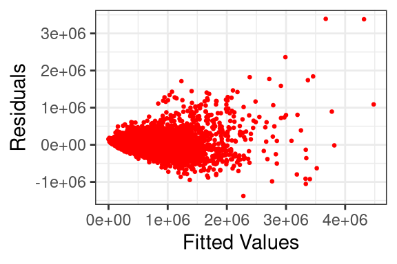
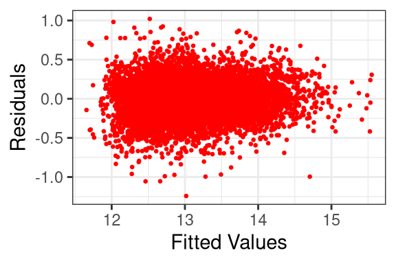
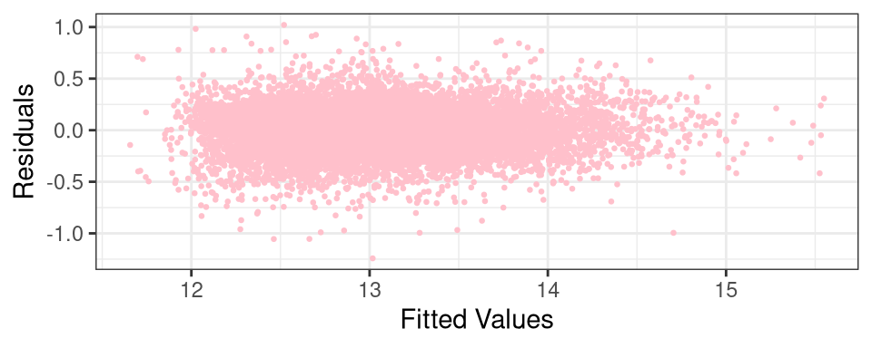

Modeling price of homes
Introduction
The Department of Assessments in King County stores a significant amount of data on the homes within the county. In this paper, we will be using the different characteristics or predictor variables listed within this data in order to estimate the price of the homes. Creating a model to predict price will help the reader understand the relationship of price to the predictor variables, and how significant each predictor is. The analysis of the subset selection reveals a trend of a large amount of significant variables, and the analysis of the model furthermore reveals the importance of categorical variables in predicting price.
Methods
Data Collection
The data used in this paper was already curated and downloaded from
https://lasanthi-asu.github.io/STT3851ClassRepo/Rmarkdown/Data/housedata.csv
It is not clear when and how the data was collected. The only information given is the origin of the data, King County Department of Assessments.
Exploratory Analysis
Exploratory analysis was performed by examining scatter plots, residual plots, and subset selection. In order to correct a positive skew in the residual plot, we applied a base 10 logarithm to price. Base 10 logarithms were added as well to certain predictor variables as it helped adjust the model to the new values and increase the adjusted \(R^2\) values. These predictor variables include square footage of the apartments interior living space (sqft_living), square footage of the land space (sqft_lot), and the square footage of interior housing living space for the nearest 15 neighbors (sqft_living15).
Figure 2.1: The residual plot of the final price model before applying base 10 logarithms to price, sqft_living, sqft_lot, sqft_living15. The adjusted \(R^2\) value is 0.8228

Figure 2.2: The residual plot of the final price model after applying base 10 logarithms to price, sqft_living, sqft_lot, sqft_living15. The adjusted \(R^2\) value is 0.8833
Statistical Modeling
Statistical concepts such as forward subset selection, analysis of residual plots, and multivariate regression techniques.
Reproducibility
All analyses performed in this paper can be reproduced by running the original .Rmd file with RStudio, assuming the link to the original data remains current and the contents thereof remain unchanged. The R packages ggplot2 (Wickham et al. 2020) and knitr (Xie 2021) will need to be installed on the user’s computer.
Results
The variables used to develop the final price prediction model includes square footage of the apartments interior living space (sqft_living), square footage of the land space (sqft_lot), and the square footage of interior housing living space for the nearest 15 neighbors (sqft_living15), lattitude (lat), longitude (long), the zipcode area the house is in (zipcode), an index from 1 to 13 where 1-3 falls short of building construction and design, 7 has an average level of construction and design, and 11-13 have a high quality level of construction and design (grade), a dummy variable determining if the apartment is overlooking the waterfront (waterfront), an index from 0 to 4 of how good the view of the property was, 0 - lowest, 4 - highest (view), an index from 1 to 5 on the condition of the apartment, 1 - lowest, 4 - highest (condition), number of bedrooms (bedrooms), and the number of bathrooms (bathrooms).
The final model used was
\[\beta_0 + \beta_{1}log10(sqft\_lot) + \beta_{2}log10(sqft\_living) + \beta_{3}log10(sqft\_living15) + \beta_4(lat) + \beta_5(waterfront) + \beta_6(view) + \\ \beta_7(bedrooms) + \beta_8(bathrooms)+ \beta_{9}f(grade:3) + \dots \beta_{19} f(grade:13)+ \beta_{20} f(condition:fair) + \dots \beta_{23}f(condition:very\_good)\\ + \beta_{24}(zipcode:98002) + \dots \beta_{92}(zipcode:98199)+ \epsilon\]
The variables f(zipcode), f(grade), and f(condition) are categorical predictor variables of varying levels.

Figure 3.1: The graph shows the residuals of the final models predictions of the training data points. Note that there is no pattern in the residual plot, indicating that the multivariate regression model created is an appropriate one.
There is a highly statistically significant relationship (\(p\)-value $ < 0.0001$) between the base 10 logarithm of price and all the variables in the model, excluding certain levels of the three categorical variables
Conclusions
The goal of the analysis was to minimize the test \(MSPE^{1/2}\). Without access to the test data, the criterion we used to decide on a model was the adjusted \(R^2\) value. Throughout the creation of the model we used best subset selection, forward selection, and lasso shrinkage in order to create a good model. In order to be computationally efficient, the forward selection model worked best for subset selection. Through analysis of residual plots of single variable linear models and correlation, we applied base 10 logarithms to price, sqft_living, sqft_lot, sqft_living15. The final test \(MSPE^{1/2}\) was 123730.8
References
This document uses ggplot2 by Wickham et al. (2024), ISLR by James et al. (2021), rmarkdown by Allaire et al. (2024), dplyr by Wickham et al. (2023), knitr by Xie (2024b), and bookdown by Xie (2024a).
References
Allaire, JJ, Yihui Xie, Christophe Dervieux, Jonathan McPherson, Javier Luraschi, Kevin Ushey, Aron Atkins, et al. 2024. Rmarkdown: Dynamic Documents for r. https://github.com/rstudio/rmarkdown.
James, Gareth, Daniela Witten, Trevor Hastie, and Rob Tibshirani. 2021. ISLR: Data for an Introduction to Statistical Learning with Applications in r. https://www.statlearning.com.
Wickham, Hadley, Winston Chang, Lionel Henry, Thomas Lin Pedersen, Kohske Takahashi, Claus Wilke, Kara Woo, Hiroaki Yutani, Dewey Dunnington, and Teun van den Brand. 2024. Ggplot2: Create Elegant Data Visualisations Using the Grammar of Graphics. https://ggplot2.tidyverse.org.
Wickham, Hadley, Romain François, Lionel Henry, Kirill Müller, and Davis Vaughan. 2023. Dplyr: A Grammar of Data Manipulation. https://dplyr.tidyverse.org.
Xie, Yihui. 2024a. Bookdown: Authoring Books and Technical Documents with r Markdown. https://github.com/rstudio/bookdown.
———. 2024b. Knitr: A General-Purpose Package for Dynamic Report Generation in r. https://yihui.org/knitr/.